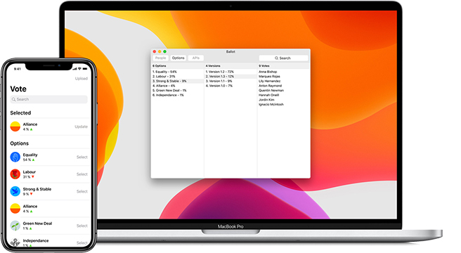

COMBINED CHOICE IS A METHOD OF DECISION MAKING THAT COMBINES EVERY RULE OR REGULATION IN ONE DIGITAL DOCUMENT.
INSTEAD OF VOTING ON EACH PROPOSAL, DECISION MAKERS CAN PUT FORWARD AN ALTERNATIVE VERSION OF THIS DOCUMENT.
EACH DECISION MAKER CHOOSES ONE VERSION, AND THE DOCUMENT WITH THE MOST SUPPORT IS ENFORCED.
THIS GIVES DECISION MAKERS THE FREEDOM TO DEVELOP IDEAS AND BUILD CONSENSUS IN WAYS THAT PRODUCE BETTER RESULTS.
COMBINED CHOICE USES TWO DIGITAL TOOLS, THE VOTE APPLICATION, AND BALLOT PROGRAM.
THE VOTE APPLICATION LETS DECISION MAKERS UPLOAD AND SELECT OPTIONS AND THE BALLOT PROGRAM CALCULATES THEIR POPULARITY.
TO USE COMBINED CHOICE IN YOUR ORGANISATION, LOCAL, OR NATIONAL AUTHORITY CONTACT INFO@COMBINEDCHOICE.ORG.
TO LEARN MORE READ OUR WHITEPAPER.
COPYRIGHT © 2020 COMBINED CHOICE
KOMBINIERTE WAHL IST EINE ENTSCHEIDUNGSMETHODE, DIE JEDE REGEL ODER REGELUNG IN EINEM DIGITALEN DOKUMENT KOMBINIERT.
Anstelle der Abstimmung über jeden Vorschlag können Entscheidungsträger eine alternative Version dieses Dokuments vorlegen.
JEDER ENTSCHEIDUNGSHERSTELLER WÄHLT EINE VERSION, UND DAS DOKUMENT MIT DER MEISTEN UNTERSTÜTZUNG WIRD DURCHGEFÜHRT.
Dies gibt der Entscheidung die Freiheit, Ideen zu entwickeln und Konsens auf eine Weise zu schaffen, die bessere Ergebnisse liefert.
KOMBINIERTE WAHL VERWENDET ZWEI DIGITALE WERKZEUGE, DIE ABSTIMMUNGSANWENDUNG UND DAS BALLOTPROGRAMM.
Mit dem Abstimmungsantrag können Entscheidungsträger Optionen hochladen und auswählen, und das Ballot-Programm berechnet ihre Popularität.
UM KOMBINIERTE WAHL IN IHRER ORGANISATION, LOKALEN ODER NATIONALEN BEHÖRDE ZU VERWENDEN, KONTAKTIEREN SIE INFO@COMBINEDCHOICE.ORG.
UM MEHR ZU LERNEN, LESEN SIE UNSER WHITEPAPER.
COPYRIGHT © 2020 KOMBINIERTE WAHL